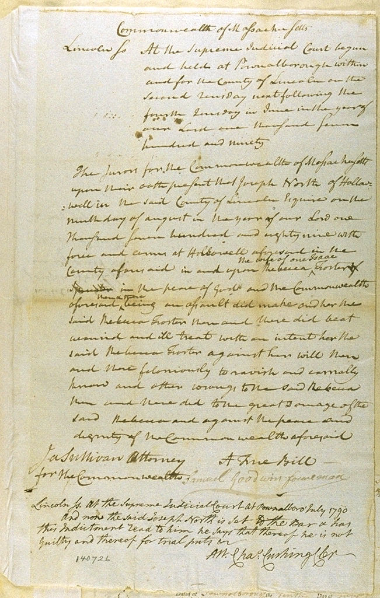

Foster v. North
Supreme Judicial Court
July 1790
View Text
View No Frames version
The Indictment

Jump to...
See this document in the 'Archive'
See this page in 'One Rape. Two Stories.' Official Story Chapt. 10